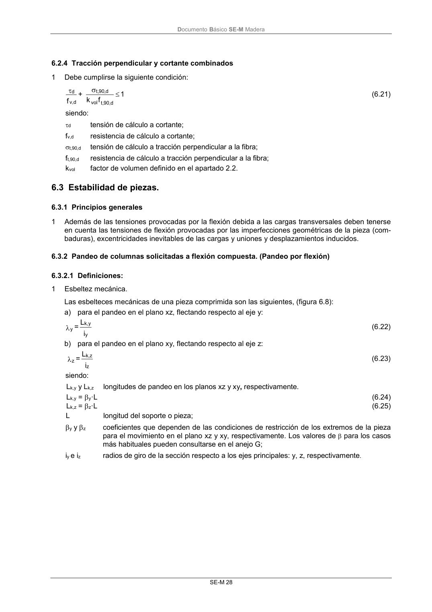

DB-SE-M · 6.2.4 Tracción perpendicular y cortante combinados · 6.3 Estabilidad de piezas. · 6.3.1 Principios generales · 6.3.2 Pandeo de columnas solicitadas a flexión compuesta. (Pandeo por flexión) · 6.3.2.1 Definiciones: · versión 2019-12-20
SHA256: 26b5819839ebfda78b0b119c5e76a0a37773b0d763c05688541870075df93718 · página física 34 de 132 · métodos de encabezado
solo si están cotejados.
Formatos: Markdown · JSON de bloques · PDF p. 34 · imagen PNG
Documento Básico SE-M Madera SE-M 28 6.2.4 Tracción perpendicular y cortante combinados 1 Debe cumplirse la siguiente condición: 1 f k + f vol d , 90 ,t d , 90 ,t d v, d (6.21) siendo: d tensión de cálculo a cortante; fv,d resistencia de cálculo a cortante; t,90,d tensión de cálculo a tracción perpendicular a la fibra; ft,90,d resistencia de cálculo a tracción perpendicular a la fibra; kvol factor de volumen definido en el apartado 2.2. 6.3 Estabilidad de piezas. 6.3.1 Principios generales 1 Además de las tensiones provocadas por la flexión debida a las cargas transversales deben tenerse en cuenta las tensiones de flexión provocadas por las imperfecciones geométricas de la pieza (com- baduras), excentricidades inevitables de las cargas y uniones y desplazamientos inducidos. 6.3.2 Pandeo de columnas solicitadas a flexión compuesta. (Pandeo por flexión) 6.3.2.1 Definiciones: 1 Esbeltez mecánica. Las esbelteces mecánicas de una pieza comprimida son las siguientes, (figura 6.8): a) para el pandeo en el plano xz, flectando respecto al eje y: i L = y y k, y (6.22) b) para el pandeo en el plano xy, flectando respecto al eje z: i L = z z k, z (6.23) siendo: Lk,y y Lk,z longitudes de pandeo en los planos xz y xy, respectivamente. Lk,y = y·L (6.24) Lk,z = z·L (6.25) L longitud del soporte o pieza; y y z coeficientes que dependen de las condiciones de restricción de los extremos de la pieza para el movimiento en el plano xz y xy, respectivamente. Los valores de para los casos más habituales pueden consultarse en el anejo G; iy e iz radios de giro de la sección respecto a los ejes principales: y, z, respectivamente.
